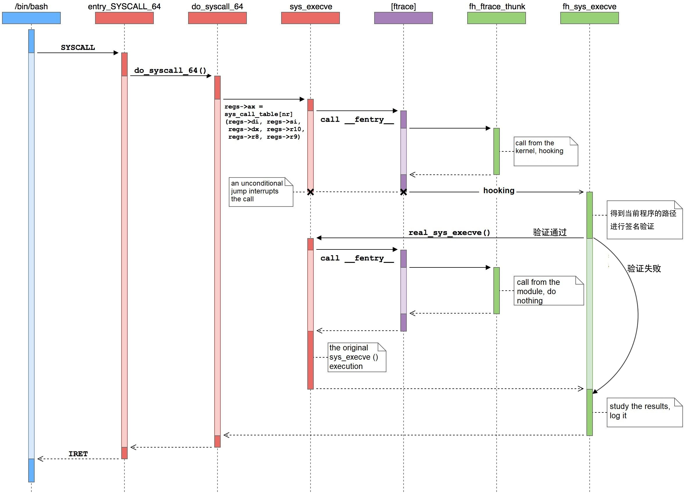
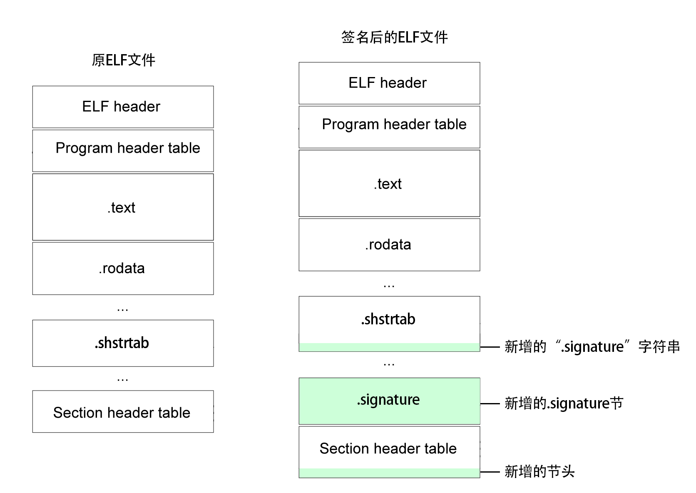

1. 测试通过的环境
- deepin15.11 amd64(Linux Kernel v4.15.0)
- deepin20beta amd64(Linux Kernel v5.3.0)
2. 定义
包含签名信息的新Section：
名称：
.signature类型：
基于公私钥的签名：
SHT_SIG_PKEY = 0x807369670x80736967的含义为
(0x80 << 24)|('s' << 16)|('i' << 8)|'g'基于证书的签名：
SHT_SIG_CERT = (SHT_SIG_PKEY + 1)
数据格式：
blob- 基于公私钥的签名：固定长度的
blob - 基于证书的签名：
pkcs7 message格式
- 基于公私钥的签名：固定长度的
大小：
基于公私钥的签名：256字节
256字节对应强度为RSA 2048
基于证书的签名：长度随证书的
issuer变化
验证模块返回值：
通过验证：返回程序执行结果
未通过验证：返回
-EKEYREJECTED(-129)命令行提示
键值被服务所拒绝或key was rejected by service
3. 实现原理
3.1 概述
签名程序使用了libssl，首先读取ELF文件的load segment，对于不同的签名方式（公私钥/证书）使用不同的方法对load segment签名得到signature，将signature作为新的section添加到ELF文件尾部。
验证模块是Linux内核模块，可动态加载和移除，运行在内核空间。其使用ftrace hook挂钩了sys_execve内核函数，在每一个程序执行前，读取ELF文件，对其进行签名校验，只有校验通过的ELF可执行程序才可以运行。
3.2 内核函数钩子
有许多hook内核函数/系统调用的方式，包括Linux Security API，修改系统调用表，kprobes等。
尝试过后发现这些都有缺点：
Linux Security API(LSM)不能动态加载- 修改系统调用表涉及汇编语言
kprobes技术复杂度较高且开销较大
最终选择了ftrace框架，挂钩了sys_execve内核函数。当验证通过时，执行real_sys_execve按正常流程执行程序，否则跳过程序执行流程并返回错误值。
在参考资料所提供的示意图中，标注了验证时机：

在Kernel v4.17.0时，sys_execve函数的形参发生改变，所以需要设置编译条件来适配deepin15.11和deepin20beta
1 | // kernel v4.17.0及之后，sys_execve系统函数形参变为struct pt_regs *regs |
3.3 生成/验证签名
首先需要确定加密算法和散列算法。可以通过less /proc/crypto命令查看和检索系统支持的加密算法和散列算法。deepin15.11 amd64和deepin20beta amd64的内核都支持pkcs1pad(rsa,sha256)加密算法和sha256散列算法，故该实现选用pkcs1pad(rsa,sha256)加密算法和sha256散列算法。
3.3.1 签名程序
签名程序通过libssl读取私钥、证书、生成签名字节等，首先读取ELF文件的第一个Load Segment，
对于不同的签名方式：
- 基于公私钥的签名：
- 将读取到的字节使用
sha256算法进行散列得到digest - 调用
RSA_sign方法，使用指定的私钥对digest进行签名
- 将读取到的字节使用
- 基于证书的签名：
- 调用
PKCS7_sign方法，使用指定的私钥和证书，对读取到的Load Segment进行签名 PKCS7_sign已包含了散列过程
- 调用
最后得到signature，将signature写入ELF文件并修正ELF头等，具体过程见下一小节。
3.3.2 验证模块
验证模块由于处于内核空间，不能使用用户空间的相关库，所以选用
Linux Kernel Crypto API来完成签名的校验工作。
通过对内核函数的hook，可以得到当前执行程序的路径，该路径可能是绝对路径或相对路径。对于相对路径，需要先利用current指针获取到当前工作目录，连接为绝对路径，才能使用filp_open函数打开ELF文件。
1 | // 内核中获取当前工作目录示例 |
能够对ELF文件进行读取之后
尝试读取签名。读取最后一个
section的header，判断类型是否SHT_SIG_PKEY或SHT_SIG_CERT，如果是就读取签名signature，否则因没有签名验证失败。读取第一个
load segment的数据，并使用sha256散列算法得到digest对于不同的签名节类型
SHT_SIG_PKEY：
读取公钥
/elf_verify/pub1.der，调用Linux Crypto API相关接口，进行验证1
2
3
4
5
6
7
8
9
10
11
12
13
14// 基于公私钥的签名验证示例
// 省略了错误处理和内存释放
tfm = crypto_alloc_akcipher("pkcs1pad(rsa,sha256)", 0, 0);
req = akcipher_request_alloc(tfm, GFP_KERNEL);
key = read_bytes("/elf_verify/pub1.der", &key_size);
ret = crypto_akcipher_set_pub_key(tfm, key, key_size);
sg_init_table(src_tab, 2);
sg_set_buf(&src_tab[0], signature, sig_len);
sg_set_buf(&src_tab[1], digest, dig_len);
akcipher_request_set_crypt(req, src_tab, NULL, sig_len, dig_len);
akcipher_request_set_callback(req, CRYPTO_TFM_REQ_MAY_BACKLOG,
crypto_req_done, &wait);
ret = crypto_wait_req(crypto_akcipher_verify(req), &wait);
pr_info("verify ret: %d", ret);
SHT_SIG_CERT
读取证书
/elf_verify/ca.crt，解析证书和pkcs7 message，并进行验证1
2
3
4
5
6
7
8
9// 基于证书的签名验证示例
// 省略了错误处理和内存释放
cert = read_bytes("/elf_verify/ca.crt", &cert_len);
x509 = x509_cert_parse(cert, cert_len);
p7 = pkcs7_parse_message(signature, sig_len);
p7->signed_infos->sig->digest = digest;
p7->signed_infos->sig->digest_size = dig_len;
ret = public_key_verify_signature(x509->pub, p7->signed_infos->sig);
pr_info("pkcs7 verify ret: %d\n", ret);
若验证通过，回到程序运行流程， 否则返回错误代码。
由于内核接口验证失败的返回是
-EKEYREJECTED，所以该验证模块也沿用了这一错误代码。
1 | pr_info("execve() before: %s\n", kernel_filename); |
3.4 读写ELF文件
由于没有合适的ELF文件读写相关库（尝试了libelf/gelf），在充分了解ELF文件格式之后，我们决定手写ELF文件处理程序。
内核空间的一些ELF读取需求示例，用户空间大同小异：
读取ELF头：ELF头位于文件的开始，读取
sizeof(Elf64_Ehdr)长度的字节，之后判断前SELFMAG个字节是否与ELFMAG相同1
2elf_ex = kmalloc(sizeof(struct elf64_hdr), GFP_KERNEL);
kernel_read(file, elf_ex, sizeof(struct elf64_hdr), &offset);读取程序头：从
e_phoff位置开始，每一个sizeof(Elf64_Phdr)长度的字节都是一个程序头，直到达到数量e_phnum读取
load segment：从第一个程序头开始，查找类型是PT_LOAD的程序头，读取从p_offset位置开始的p_filesz个字节1
2
3
4
5
6
7
8
9elf64_phdr = kmalloc(sizeof(Elf64_Phdr), GFP_KERNEL);
for (i=0;i<elf64_ex->e_phnum;++i) {
ph_offset = elf64_ex->e_phoff + sizeof(Elf64_Phdr) * i;
kernel_read(fp, elf64_phdr, sizeof(Elf64_Phdr), &ph_offset);
if (elf64_phdr->p_type == PT_LOAD)
break;
}
load1_data = vmalloc(elf64_phdr->p_filesz);
kernel_read(fp, load1_data, elf64_phdr->p_filesz, &elf64_phdr->p_offset);读取节头：从
e_shoff位置开始，每一个sizeof(Elf64_Shdr)长度的字节都是一个程序头，直到达到数量e_shnum
签名程序对ELF文件的编辑：
将字符串”.signature”写入
.shstrtab节的尾部，并相应将其sh_size += sizeof(".signature")，为了在readelf时能够显示新增节的名称将物理位置在
.shstrtab节之后的节的sh_offset += sizeof(".signature")将生成的
signature写到最后一个节之后将新的节头写入节头表的尾部（通常也是ELF文件尾部）
- 设置
sh_size为signature的长度 - 根据签名的类型设置
sh_type为SHT_SIG_PKEY或SHT_SIG_CERT - 设置
sh_name为”.signature”在.shstrtab的位置 - 设置
sh_offset为该节在ELF文件中的位置
- 设置
设置ELF头的
e_shoff += sizeof(".signature") + 签名长度，e_shnum += 1节头表的位置在
.shstrtab和签名数据之后
ELF文件编辑示意图：

签名程序可以撤销对ELF文件的签名，将签名的步骤逆向操作即可。
因为
load segment包含了ELF头，签名之后我们不得不改变ELF头的e_shoff和e_shnum，所以在验证时，需要将ELF头恢复到签名前的状态，也就是将load segment恢复到签名前的状态，之后再进行散列，得到的digest才会和签名前一致。这就需要在验证模块中，散列前设置
e_shoff -= sizeof(".signature") + 签名长度，e_shnum -= 1，之后使用该ELF头替换load segment数据的前sizeof(Elf64_Ehdr)个字节